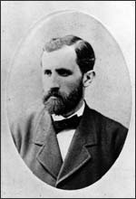

Friedrich Miescher
1844–1895
People tend to think of DNA as a recent discovery, largely because so much progress has been made in the past 50 years. But did you know that DNA was first discovered at about the same time that Gregor Mendel was experimenting with his pea plants and Charles Darwin was working out the details of his theory of natural selection? The first person to look at DNA was Friedrich Miescher, back in 1869—although he didn't fully understand his discovery.
Friedrich Miescher was a medical researcher from Basel, Switzerland. He'd originally wanted to become a priest, but his father didn't like the idea, so instead he attended medical school. He earned his doctorate in 1868, when he was 24 years old. Because he had a hearing impairment, he decided to go into medical research so that he wouldn't have to interact with patients.
After graduation Miescher went to Tübingen, Germany, to work for a chemist named Ernst Hoppe-Seyler. Hoppe-Seyler's work was unusual because it focused on the chemical composition of cells—a subject that very few people were studying at that time. Hoppe-Seyler asked Miescher to investigate the chemicals that make up white blood cells.
One good source for white blood cells—although not a very pleasant one—is the pus from infections. In 1869 Miescher took some used bandages from a nearby hospital where soldiers wounded in the Crimean War were being treated. He used acid from a pig's stomach to break down the pus cells. The cells' nuclei quickly settled to the bottom of the container. Miescher found that the nuclei were made of a substance that contained high levels of phosphorus. Miescher called the new substance "nuclein."
In 1870 Miescher returned to Basel. There, working near a river known for its salmon population, he found an even better source of nuclear material: salmon sperm. Salmon sperm have unusually large nuclei, which made them ideal for Miescher's experiments. He was able to separate the "nuclein" from the sperm cells into a protein and an acid. From that point on, "nuclein" became known as "nucleic acid." Miescher didn't know it then, but the acid he had extracted was deoxyribonucleic acid—later to become known as DNA.
Miescher was the first person to suggest that nucleic acid might be the source of some sort of code for inheritance. Like most people, though, he thought that the proteins in the nucleic acid—not the DNA—were the most likely molecules of heredity. This idea would not be disproved for nearly a hundred years.
Miescher was also the scientist who discovered that the level of carbon dioxide in blood, not the level of oxygen, regulates breathing. In 1885 he founded a physiological institute at the Vesalianum in Switzerland. He died on August 26, 1895, from tuberculosis.